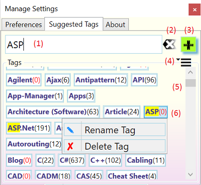

The Suggested Tags Tab
The Suggested Tags tab manages the collection of tags which the Tag Pages dialog uses as suggestions.
☝️ Numbered dialog elements are referenced by superscripts and list item indices.

Tag input box for entering one or more tags (comma ',' separated). Tags in the Suggested Tags panel13 are filtered and highlighted as you type. Following keyboard shortcuts are supported while focus is on the input box:
ESC- Clear the input box. Same as pressing the Clear button2.
ENTER-
Add the typed list of tag names to the collection of tags in the_Tags_ panel9. subsequent tagging operations. The names of new tags are updated according to the Tag Format selected on the Preferences tab.
Add a tag to the suggestion list
- Type a tag name into the input box (1). Similar tags are highlighted as you type so you can determine whether your tag already exists.
Press Enter or tap or click the '+' button (3) to add the typed tag to the suggestion list
- Remove a tag from the suggestion list and from all _OneNote_pages
- Locate the tag to remove on the Tags panel (5) either by scrolling or by typing the full or partial name into the tag input box (1)
- Click or tap on the tag to open its action menu (6) a. Click or tap one the Delete Tag action. This open a confirmation menu. b. Click on the Confirm or Cancel action. If the tag deletion is confirmed, the tag is removed from the suggestion list. If the tag is in use on _OneNote_pages (indicated by the number behind the tag), it is removed from the pages as well (unless a page is in the 'Recycle Bin').
- Click on the 'Reset' button (2) to clear the input box
- Rename a tag in the suggestion list and on all _OneNote_pages
- Locate the tag to remove on the Tags panel (5) either by scrolling or by typing the full or partial name into the tag input box (1)
- Click or tap on the tag to open its action menu (6)
- Click or tap one the Rename Tag action. This puts the tag into edit mode.
- Edit the tag name inline. You can enter a ',' (comma) separated tag list to replace one tag multiple names.
- Press Enter. This opens the confirmation dialog,
- Click on the Confirm or Cancel action. If the tag rename is confirmed, the tag is renames on the suggestion list. If the tag is in use on _OneNote_pages (indicated by the number behind the tag), it is renamed on all pages as well (unless a page is in the 'Recycle Bin').
- Click on the 'Reset' button (2) to clear the input box
Tags panel actions
Click on the action menu (4) of the Tags panel (5) and select one of the following actions:
- Refresh: This updates the page count of the suggested tags. Note tags may my seem to re-appear after deletion or rename, This happens when pages are read-only (e.g. pages in the Recycle Bin are read-only)
- Copy Tags: This action puts a ',' separated list of all tags in the suggestion list into the clipboard. You can share this list to other users of the tagging kit (e.g. by email). The recipient can copy/paste the comma separated list into the tag input box (1) and press Enter or tap or click the '+' button (3) to add the tags to their suggestion list